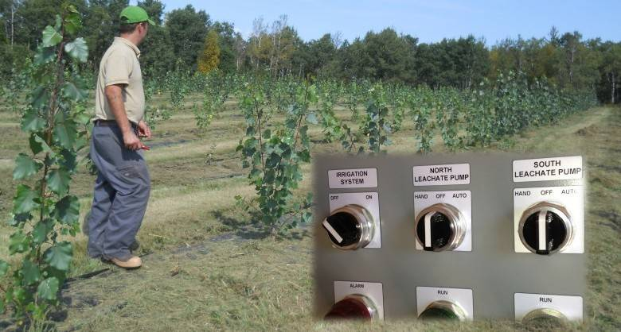
Northern Wisconsin
Ex-situ phytoremediation of paper mill landfill leachate
A full-scale poplar system built for the sole purpose of treating leachate from a paper mill sludge compost facility. Three acres planted, drip irrigation, no liner beneath the trees, more than thirty feet to the water table.
3 acres · $19,000/yr before · $23,000 to install · payback just over a year
 North Central Wisconsin
North Central Wisconsin
Hybrid poplar landfill cover, irrigation and groundwater monitoring
A closed landfill holding paper mill waste. Pilot tree cover approved by WDNR, then deployed across most of the cover; leachate now feeds an automated irrigation system instead of being trucked to the POTW.
WDNR-approved cover · leachate reused as irrigation · monitoring ongoing
 Northern Wisconsin
Northern Wisconsin
In-situ phytoremediation of landfill leachate
An older, unlined municipal landfill constructed in a peat wetland, with the water table inside the waste. A full-scale poplar and willow stand controls groundwater migration and leachate concentrations.
6 acres · 40 gal/tree/day · 3.1M gal/acre/yr
 Iowa
Iowa
Phytoremediation of nitrate in groundwater
Long-term leakage of liquid fertiliser left ammonia and nitrate in soil and groundwater. Poplar and willow planted over the plume, and the manufacturer’s own staff trained to run the operation and maintenance.
3.5 acres · 7,000 ppm ammonia-N · 25+ ft trees
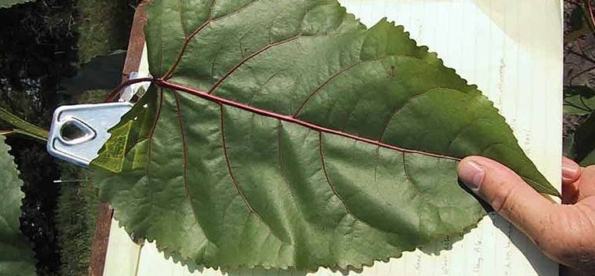
Central Wisconsin
Phytoremediation of pesticides in groundwater
A flying service that disposed of spent pesticide containers and pressure-tested spray equipment for decades. Dinoseb, metolachlor, atrazine and others; the tree system sits downgradient of the source area.
measurable reversal of groundwater flow · ongoing with UW
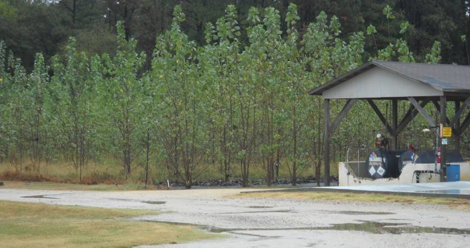
Northern Wisconsin
Phytoremediation of petroleum in groundwater
A bulk plant beside a residential neighbourhood. Heaviest soils excavated and treated off site; about 200 poplars planted directly over the residual plume, solar powered.
~200 trees · 600,000 gal/yr · 50% below pump-and-treat
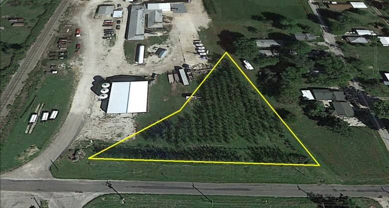
Eastern Wisconsin
Phytoremediation of stormwater at agronomy facilities
Two facilities: a 1.7-acre fertiliser containment collecting an estimated 1.1 million gallons a year, and a site where stormwater infiltrated shallow soils over bedrock. Poplar systems sized to transpire water and sequester nitrogen.
2 acres · 18,000 gpd at five years · 600–1,000 lb N/yr
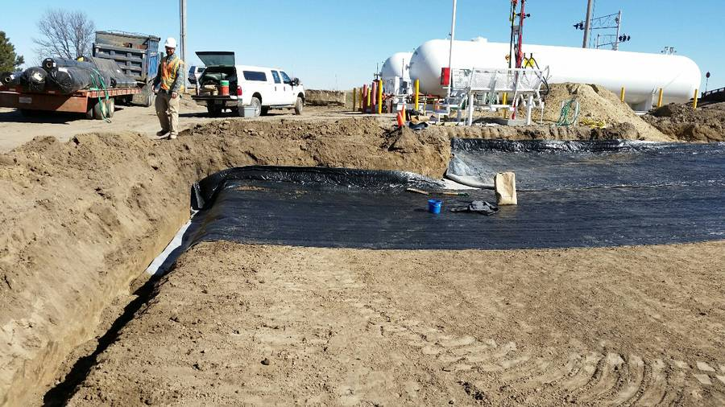
Wisconsin
Excavation options where soil is out of reach
Where utilities, rail or road beds block access, limited excavation plus a low-permeability geomembrane and bentonite cap with drainage keeps the area usable for equipment storage and parking.
capped in place · area returned to use
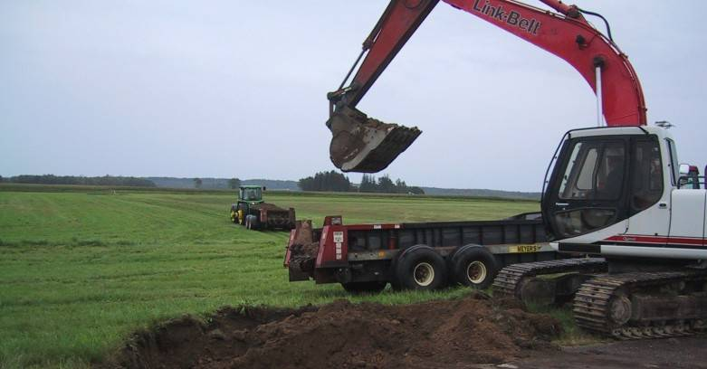
Northern Wisconsin
Remediation of dinoseb-impacted soil
A banned chemical at an airport site. Landspreading below the industrial contaminant level under a contained-out determination, with mobile laboratory analysis of stockpiles. The first landspread approval of its kind in the state.
25,000+ tons of soil avoided · first in Wisconsin
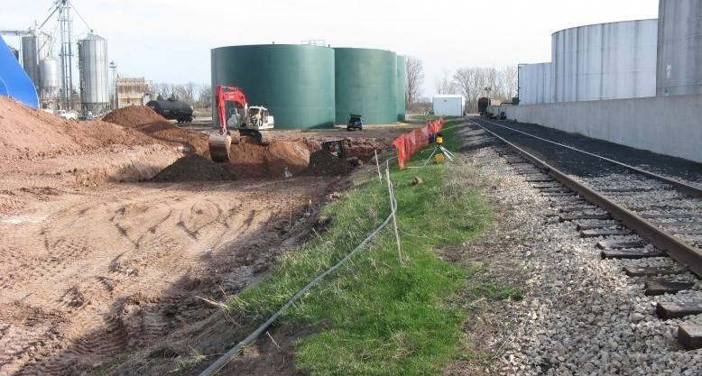
Wisconsin
Remediation of fertiliser in soil
A 1.5-acre earthen containment holding more than 150,000 pounds of subsurface nitrogen. Geology-based negotiation with the regulator cut excavation from over 25,000 tons to under 15,000; the clay was dried with quicklime and land applied.
25,000 → under 15,000 tons · beneficial reuse
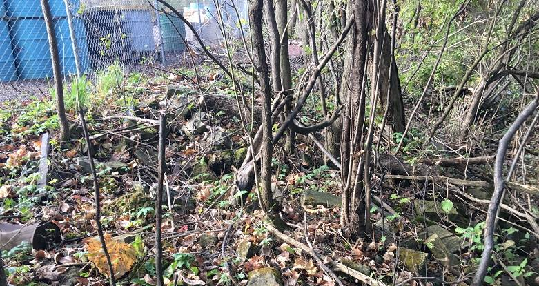
Minnesota
Phase I ESA, wholesale ag-chem property
A large liquid fertiliser terminal on the Mississippi. Review of fifty years of terminal activity plus the neighbouring facilities and their environmental records, compiled into one direct path forward.
50 years of records · one path forward
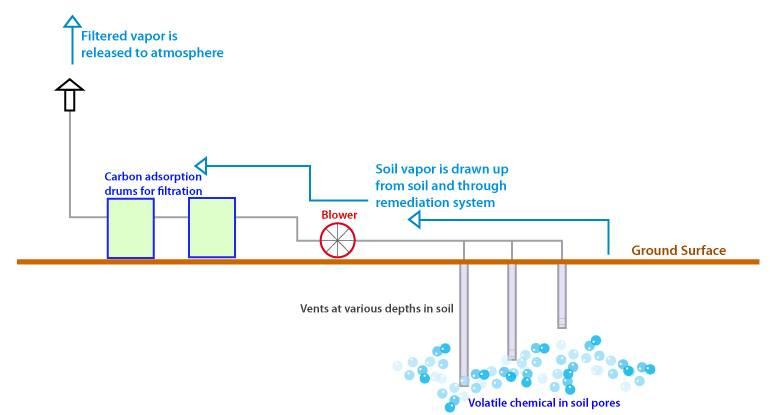
Wisconsin
Soil vapour remediation system
A former dry cleaner where solvent vapour was migrating into a building. Extraction through two reactive-carbon canisters; sampling showed VOC levels dropping over the first eight months of operation.
VOC levels falling · less costly than excavation
Wisconsin
Litigation support, paper mill groundwater case
Expert witness work: over 1,000 pre-trial hours across 85 years of operating records, mill liquids, sewer maintenance and groundwater history, assembled into one digitally managed case file.
1,000+ hours · 85 years of records
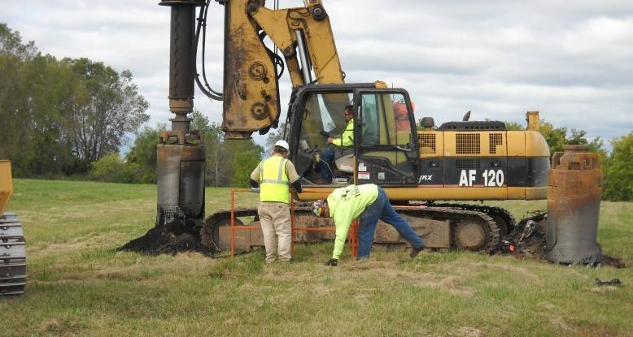
East-Central Wisconsin
Landfill gas investigation and remediation
Three town landfills in a 40-acre complex, with methane migrating beyond the waste footprint. Soil vapour extraction plus passive vents throughout, operated and monitored to WDNR rules and inside the established budget.
40 acres · SVE + passive vents · under budget
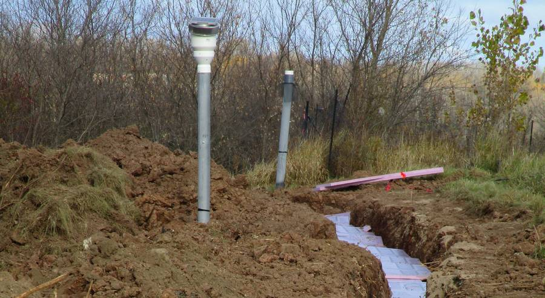
Fox Valley, Wisconsin
Soil gas methane at a municipal complex
Methane found beneath a village municipal building and garage sitting on three closed landfills. Passive venting across most of the area; an active extraction system added in 2019 for adjacent development.
passive + active · controls in place since 2019
 Wisconsin · 2023
Wisconsin · 2023
Willow detention basins for stormwater
Two planted basins treating runoff after repeated uncontrolled discharge events, built under DATCP oversight with automated irrigation and native seeding for treatment and pollinator habitat.
DATCP oversight · pollinator habitat · maintenance ongoing
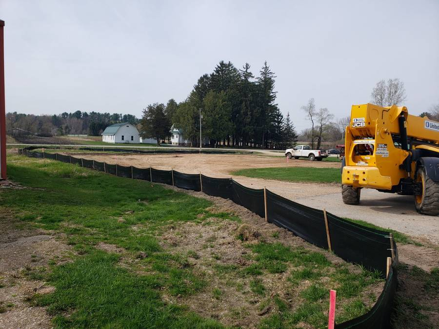
Wisconsin
New building and parking area, site preparation
Stormwater modelling, soil evaluation, pond permitting, NOI, erosion control and management plans, and wetland delineation across 1.8 acres of disturbance, with wetlands marked and protected.
1.8 acres · 44% TSS reduction · WPDES coverage
Project summaries are drawn from our published gallery. Client names are withheld; every location, figure and regulatory reference is from the project record.